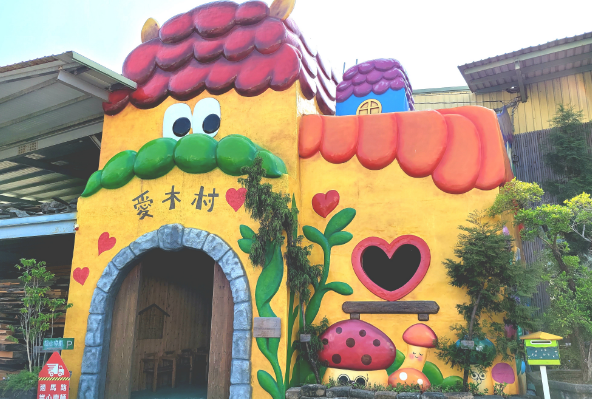
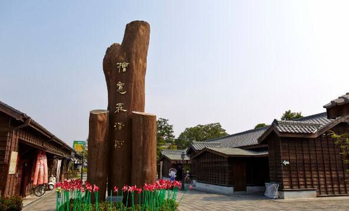

| 嘉義市立棒球場 ｜愛木村 ｜ 檜意生活村 | |
| ，嘉義市擁有豐富的歷史與文化底蘊，既保留了日治時期的歷史建築，也展現台灣地方特色與產業文化。從嘉義市立棒球場的百年歷史，到愛木村傳承檜木工藝的溫暖故事，再到檜意森活村的森林文創園區，每一處景點都承載著不同時代的記憶與人文情感。在這些場域中不僅能感受體育的熱情與歷史脈動，也能欣賞木材工藝的精緻與大自然的美好，更能體驗文創園區所帶來的生活美學。嘉義的魅力，正是這些景點所串連出的歷史、文化與自然共生的獨特風景。 | |
嘉義市立棒球場
嘉義市立棒球場是位於臺灣嘉義市東區山頂仔的一座公有棒球場，嘉義市棒球場的前身為嘉義公園野球場，戰後改稱嘉義中山公園棒球場，啟用於日治時期1918年，當時號稱為台灣最好的公園棒球場，也是中華職棒現今使用中歷史最悠久的比賽場地；近期改建工程則於1998年完成。
資料來源： 維基百科 |
|
|
愛木村在民國50年代是嘉義的一間檜木製材廠，曾經參與台灣經濟起飛的繁榮，也走過風雨飄搖，景氣不振的年代，50年的歲月，不管晴天、陰天、順境或逆境，依舊每天做著同樣的事。
資料來源： 愛木村官網 top |
 |
|
檜意森活村位於臺灣嘉義市東區，是臺灣第一座以森林為主題的文創園區，園區內以日治時代的檜町，現共和路與林森東路間的29棟歷史建築「嘉義市共和路與北門街林管處國有宿眷舍」以及市定古蹟「嘉義營林俱樂部」構成。占地約3.4公頃，並在忠孝路與林森東路路口設有「農業精品館」。
資料來源： 維基百科 top |
 |